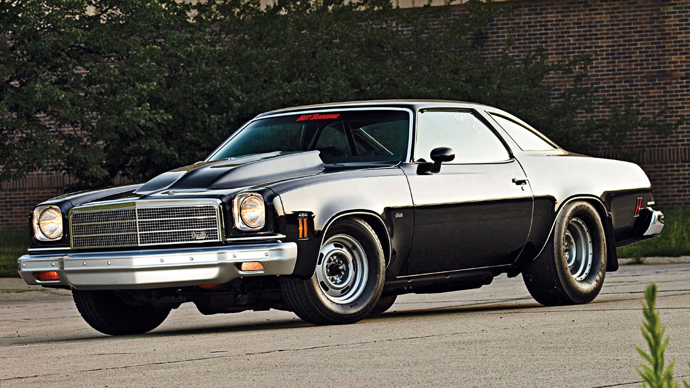

1912 Chevrolet Classic Six Classic Six, Ünlü İsviçreli yarış pilotu Louis Chevrolet ve William Durant’ın biraraya gelerek Chevrolet Şirketini kurmalarından sonra üretilen ilk otomobildir. Classic Six modeli o dönemde en büyük kapasiteye sahip V8 motoru ile lüks, güçlü ve büyük bir modeldi. Bu heybetli model o dönemdeki çağdaş rakiplerinden çok daha pahalı olan 2.150$ fiyat etiketi taşıyordu. O dönemin rüya otomobilini Louis Chevrolet ve arkadaşı olan Fransız mühendisi Etienne Planche ile birlikte tasarladılar. 1911 yılında ilk kez halka tanıtılan, 1912 yılında ise satışına başlanan bu model , 1914 yılında, daha uygun fiyatlı modeller üretmek üzere Durant ve Chevrolet’in ortak kararı ile sona erdi. Bu dönem içinde 5.987 adet Classic Six üretildi. Classic Six modeli ile ilgili Ed Welburn "Bu model Chevrolet’in ilk modeli olması sebebi ile çok büyük önem taşıyor. Louis Chevrolet, tüm deneyim ve birikimini bu aracı tasarlamaya harcamış ve bir şirket tarihçesini oluşturmuştur” dedi.
1932 Chevrolet Deluxe Sport Coupe Sıkıntılar bazen çok güzel ve büyük sonuçlar doğurur. 1932 yılında Deluxe Sport Coupe’nin pazara sunulmasıda bu olaya çok güzel bir örnek. Chevrolet satışları bir önceki yıla göre %50 düşmüştü. Deluxe Sport Coupe atletik sportif görünümü ve yüksek performansı ile göz dolduran kompakt iki kişilik bir otomobil olarak piyasada ilgi gördü. Daha fazla yolcu taşıması sağlamak üzere bagajına arka koltuk konulabiliniyordu. Ed Welburn Deluxe Sport Coupe için “ Güneşli havalarda çok eğlenceli ve klas bir tasarım. Chevrolet hakkında bizlere çok şey söylüyor. Kullanabilinecek pekçok sözcük ama ama bu otomobil için en geçerli olanı otomobilin ruhu vardı aynı zamanda ekonomik ve çağdaş bir model olduğu için müşteriler tarafından büyük ilgi gördü. Bu söylediklerim Chevrolet modellerimiz için bugün de geçerlidir " dedi.
